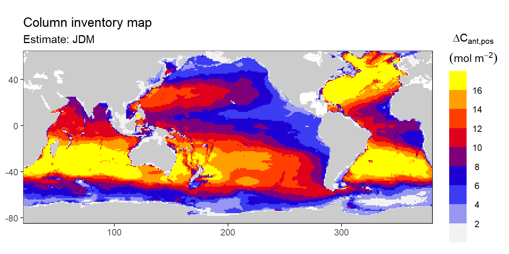
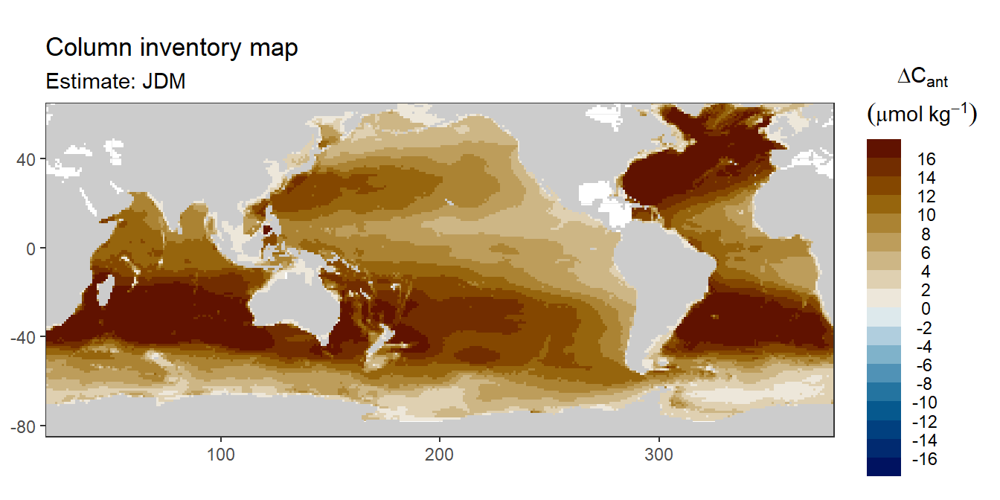

Comparison of cant estimates to results of Gruber et al 2019
Jens Daniel Müller
09 November, 2020
Last updated: 2020-11-09
Checks: 7 0
Knit directory: Cant_eMLR/
This reproducible R Markdown analysis was created with workflowr (version 1.6.2). The Checks tab describes the reproducibility checks that were applied when the results were created. The Past versions tab lists the development history.
Great! Since the R Markdown file has been committed to the Git repository, you know the exact version of the code that produced these results.
Great job! The global environment was empty. Objects defined in the global environment can affect the analysis in your R Markdown file in unknown ways. For reproduciblity it’s best to always run the code in an empty environment.
The command set.seed(20200707) was run prior to running the code in the R Markdown file. Setting a seed ensures that any results that rely on randomness, e.g. subsampling or permutations, are reproducible.
Great job! Recording the operating system, R version, and package versions is critical for reproducibility.
Nice! There were no cached chunks for this analysis, so you can be confident that you successfully produced the results during this run.
Great job! Using relative paths to the files within your workflowr project makes it easier to run your code on other machines.
Great! You are using Git for version control. Tracking code development and connecting the code version to the results is critical for reproducibility.
The results in this page were generated with repository version b7cfc42. See the Past versions tab to see a history of the changes made to the R Markdown and HTML files.
Note that you need to be careful to ensure that all relevant files for the analysis have been committed to Git prior to generating the results (you can use wflow_publish or wflow_git_commit). workflowr only checks the R Markdown file, but you know if there are other scripts or data files that it depends on. Below is the status of the Git repository when the results were generated:
Ignored files:
Ignored: .Rproj.user/
Ignored: data/GLODAPv1_1/
Ignored: data/GLODAPv2_2016b_MappedClimatologies/
Ignored: data/GLODAPv2_2020/
Ignored: data/Gruber_2019/
Ignored: data/WOCE/
Ignored: data/World_Ocean_Atlas_2013_Clement/
Ignored: data/World_Ocean_Atlas_2018/
Ignored: data/eMLR/
Ignored: data/mapping/
Ignored: data/pCO2_atmosphere/
Ignored: dump/
Untracked files:
Untracked: code/globe_3d.R
Untracked: code/mapping_functions.R
Note that any generated files, e.g. HTML, png, CSS, etc., are not included in this status report because it is ok for generated content to have uncommitted changes.
These are the previous versions of the repository in which changes were made to the R Markdown (analysis/analysis_this_study_vs_Gruber_2019.Rmd) and HTML (docs/analysis_this_study_vs_Gruber_2019.html) files. If you’ve configured a remote Git repository (see ?wflow_git_remote), click on the hyperlinks in the table below to view the files as they were in that past version.
| File | Version | Author | Date | Message |
|---|---|---|---|---|
| Rmd | b7cfc42 | jens-daniel-mueller | 2020-11-09 | added offset plots |
| html | 042043c | jens-daniel-mueller | 2020-11-09 | Build site. |
| Rmd | b21ea65 | jens-daniel-mueller | 2020-11-09 | added offset plots |
| html | 3bdad86 | jens-daniel-mueller | 2020-11-09 | Build site. |
| Rmd | d98acd6 | jens-daniel-mueller | 2020-11-09 | included diverging maps |
| html | 7c7bb6c | jens-daniel-mueller | 2020-11-09 | Build site. |
| Rmd | 1d87871 | jens-daniel-mueller | 2020-11-09 | included diverging maps |
| html | 68c0bbd | jens-daniel-mueller | 2020-11-09 | Build site. |
| Rmd | aa35b80 | jens-daniel-mueller | 2020-11-09 | included negative Cant data |
| html | 280c425 | jens-daniel-mueller | 2020-11-09 | Build site. |
| Rmd | 7786901 | jens-daniel-mueller | 2020-11-09 | created comparison plots |
| html | b170b79 | jens-daniel-mueller | 2020-11-03 | Build site. |
| Rmd | bfa7a21 | jens-daniel-mueller | 2020-11-03 | added comparison to Gruber 2019, revised basin mask |
library(tidyverse)
library(patchwork)
library(scico)
library(scales)
library(metR)
library(kableExtra)
library(collapse)
library(marelac)
library(gt)1 Data sources
1.1 This study
cant estimates from this study:
- Mean and SD per grid cell (lat, lon, depth)
- Zonal mean and SD (basin, lat, depth)
- Inventories (lat, lon)
# cant_3d_JDM <-
# read_csv(here::here("data/mapping/_summarized_files",
# "cant_3d.csv"))
#
# cant_3d_JDM <- cant_3d_JDM %>%
# filter(eras == "JGOFS_GO") %>%
# select(lon,
# lat,
# depth,
# basin_AIP,
# cant,
# cant_pos) %>%
# mutate(estimate = "JDM")
cant_zonal_JDM <-
read_csv(here::here("data/mapping/_summarized_files",
"cant_zonal.csv"))
cant_zonal_JDM <- cant_zonal_JDM %>%
filter(eras == "JGOFS_GO") %>%
select(lat,
depth,
basin_AIP,
cant_mean,
cant_pos_mean,
cant_sd,
cant_pos_sd)
cant_inventory_JDM <-
read_csv(here::here("data/mapping/_summarized_files",
"cant_inv.csv"))
cant_inventory_JDM <- cant_inventory_JDM %>%
rename(cant_pos_inv = cant_inv_pos)
cant_inventory_JDM <- cant_inventory_JDM %>%
filter(eras == "JGOFS_GO") %>%
select(-c(eras, basin))1.2 Gruber 2019
# cant_3d_G19 <-
# read_csv(here::here("data/Gruber_2019/_summarized_files",
# "G19_cant_3d.csv"))
#
# cant_3d_G19 <- cant_3d_G19 %>%
# mutate(estimate = "G19") %>%
# select(-eras)
cant_inventory_G19 <-
read_csv(here::here("data/Gruber_2019/_summarized_files",
"G19_cant_inv.csv"))
cant_inventory_G19 <- cant_inventory_G19 %>%
select(-eras)
cant_zonal_G19 <-
read_csv(here::here("data/Gruber_2019/_summarized_files",
"G19_cant_zonal.csv"))
cant_zonal_G19 <- cant_zonal_G19 %>%
filter(eras == "JGOFS_GO") %>%
select(lat,
depth,
basin_AIP,
cant_mean,
cant_pos_mean,
cant_sd,
cant_pos_sd)1.3 Join data sets
cant_inventory_long <- bind_rows(
cant_inventory_JDM %>% mutate(estimate = "JDM"),
cant_inventory_G19 %>% mutate(estimate = "G19")
)
cant_inventory_wide <- cant_inventory_long %>%
pivot_wider(names_from = estimate, values_from = cant_pos_inv:cant_inv) %>%
drop_na()
cant_inventory_wide <- cant_inventory_wide %>%
mutate(cant_pos_inv_delta = cant_pos_inv_G19 - cant_pos_inv_JDM,
cant_inv_delta = cant_inv_G19 - cant_inv_JDM)cant_zonal_long <- bind_rows(
cant_zonal_JDM %>% mutate(estimate = "JDM"),
cant_zonal_G19 %>% mutate(estimate = "G19")
)
cant_zonal_wide <- cant_zonal_long %>%
pivot_wider(names_from = estimate, values_from = cant_mean:cant_pos_sd) %>%
drop_na()
cant_zonal_wide <- cant_zonal_wide %>%
mutate(cant_pos_mean_delta = cant_pos_mean_G19 - cant_pos_mean_JDM,
cant_mean_delta = cant_mean_G19 - cant_mean_JDM)2 Color scale
For ease of comparison with Gruber et al (2019) we adapt their color scale, including the ranges and breaks applied in various types of visualizations.
rgb2hex <- function(r, g, b)
rgb(r, g, b, maxColorValue = 100)
cols = c(rgb2hex(95, 95, 95),
rgb2hex(0, 0, 95),
rgb2hex(100, 0, 0),
rgb2hex(100, 100, 0))
Gruber_rainbow <- colorRampPalette(cols)
rm(rgb2hex, cols)3 cant budgets
Global cant inventories were estimated in Pg-C. Please note that here we only added positive cant values in the upper 3000m and do not apply additional corrections for areas not covered.
cant_inventory_budget <- cant_inventory_long %>%
mutate(surface_area = earth_surf(lat, lon),
cant_inv_grid = cant_inv*surface_area,
cant_pos_inv_grid = cant_pos_inv*surface_area) %>%
group_by(basin_AIP, estimate) %>%
summarise(cant_total = sum(cant_inv_grid)*12*1e-15,
cant_total = round(cant_total,1),
cant_pos_total = sum(cant_pos_inv_grid)*12*1e-15,
cant_pos_total = round(cant_pos_total,1)) %>%
ungroup()
cant_inventory_budget %>%
gt(rowname_col = "basin_AIP",
groupname_col = c("estimate")) %>%
summary_rows(
groups = TRUE,
fns = list(total = "sum")
)| cant_total | cant_pos_total | |
|---|---|---|
| G19 | ||
| Atlantic | 10.8 | 11.0 |
| Indian | 5.6 | 6.9 |
| Pacific | 12.5 | 13.2 |
| total | 28.90 | 31.10 |
| JDM | ||
| Atlantic | 9.9 | 10.3 |
| Indian | 10.1 | 10.3 |
| Pacific | 17.5 | 18.1 |
| total | 37.50 | 38.70 |
rm(cant_inventory_budget)4 cant - positive
In a first series of plots we explore the distribution of cant, taking only positive estimates into account (positive here refers to the mean cant estimate across 10 eMLR model predictions available for each grid cell). Negative values were set to zero before calculating mean sections and inventories.
4.1 Inventory map
4.1.1 Absolute values
Column inventory of positive cant between the surface and 3000m water depth per horizontal grid cell (lat x lon).
breaks <- c(seq(0,16,2),Inf)
breaks_n <- length(breaks) - 1
cant_inventory_long <- cant_inventory_long %>%
mutate(cant_pos_inv_int = cut(cant_pos_inv,
breaks,
right = FALSE))
cant_inventory_long %>%
ggplot() +
geom_raster(data = landmask,
aes(lon, lat), fill = "grey30") +
geom_raster(aes(lon, lat, fill = cant_pos_inv_int)) +
coord_quickmap(expand = 0) +
# scale_fill_manual(values = Gruber_rainbow(breaks_n)) +
scale_fill_scico_d(palette = "batlow", direction = -1) +
facet_wrap( ~ estimate, ncol = 1) +
theme(axis.title = element_blank())
4.1.2 Offset
Column inventory of positive cant between the surface and 3000m water depth per horizontal grid cell (lat x lon).
breaks <- c(-Inf, seq(-15, 15, 3), Inf)
cant_inventory_wide %>%
ggplot() +
geom_raster(data = landmask,
aes(lon, lat), fill = "grey80") +
geom_raster(aes(lon, lat, fill = cut(cant_pos_inv_delta, breaks))) +
scale_fill_scico_d(palette = "vik", drop = FALSE,
name = "delta Cant") +
coord_quickmap(expand = 0) +
theme(axis.title = element_blank())
4.2 Zonal mean sections
4.2.1 Absolute values
breaks <- c(seq(0,18,1),Inf)
breaks_n <- length(breaks) - 1
cant_zonal_long <- cant_zonal_long %>%
mutate(cant_pos_mean_int = cut(cant_pos_mean,
breaks,
right = FALSE))
zonal_section <- function(df, i_basin_AIP, i_estimate, var) {
name_var <- var
var <- sym(var)
lat_max <- max(df$lat)
lat_min <- min(df$lat)
df_sub <- df %>%
filter(basin_AIP == i_basin_AIP,
estimate == i_estimate)
surface <- df_sub %>%
ggplot(aes(lat, depth, z = !!var)) +
geom_contour_filled(breaks = breaks) +
scale_fill_manual(values = Gruber_rainbow(breaks_n),
name = "cant") +
coord_cartesian(expand = 0,
ylim = c(500, 0),
xlim = c(lat_min, lat_max)) +
scale_y_reverse() +
scale_x_continuous(breaks = seq(-100,100,20)) +
theme(
axis.title.x = element_blank(),
axis.text.x = element_blank(),
axis.ticks.x = element_blank()
) +
labs(y = "Depth (m)",
title = paste("Basin:", i_basin_AIP, "| estimate:", i_estimate))
deep <- df_sub %>%
ggplot(aes(lat, depth, z = !!var)) +
geom_contour_filled(breaks = breaks) +
scale_fill_manual(values = Gruber_rainbow(breaks_n),
name = "cant") +
scale_y_reverse() +
scale_x_continuous(breaks = seq(-100,100,20)) +
coord_cartesian(expand = 0,
ylim = c(3000, 500),
xlim = c(lat_min, lat_max)) +
labs(x = "latitude (°N)", y = "Depth (m)")
surface / deep +
plot_layout(guides = "collect")
}
for (i_basin_AIP in unique(cant_zonal_long$basin_AIP)) {
for (i_estimate in unique(cant_zonal_long$estimate)) {
print(zonal_section(cant_zonal_long,
i_basin_AIP = i_basin_AIP,
i_estimate = i_estimate,
"cant_pos_mean"))
}
}


rm(breaks, breaks_n)4.2.2 Offset
breaks <- c(-Inf,seq(-16,16,2),Inf)
breaks_n <- length(breaks) - 1
zonal_section <- function(df, i_basin_AIP, var) {
# df <- cant_zonal_wide
# i_basin_AIP <- unique(cant_zonal_wide$basin_AIP)[1]
# var <- "cant_pos_mean_delta"
name_var <- var
var <- sym(var)
lat_max <- max(df$lat)
lat_min <- min(df$lat)
df_sub <- df %>%
filter(basin_AIP == i_basin_AIP)
surface <- df_sub %>%
ggplot(aes(lat, depth, z = !!var)) +
geom_contour_filled(breaks = breaks) +
scale_fill_scico_d(palette = "vik", drop = FALSE) +
coord_cartesian(expand = 0,
ylim = c(500, 0),
xlim = c(lat_min, lat_max)) +
scale_y_reverse() +
scale_x_continuous(breaks = seq(-100,100,20)) +
theme(
axis.title.x = element_blank(),
axis.text.x = element_blank(),
axis.ticks.x = element_blank()
) +
labs(y = "Depth (m)",
title = paste("Basin:", i_basin_AIP))
deep <- df_sub %>%
ggplot(aes(lat, depth, z = !!var)) +
geom_contour_filled(breaks = breaks) +
scale_fill_scico_d(palette = "vik", drop = FALSE) +
scale_y_reverse() +
scale_x_continuous(breaks = seq(-100,100,20)) +
coord_cartesian(expand = 0,
ylim = c(3000, 500),
xlim = c(lat_min, lat_max)) +
labs(x = "latitude (°N)", y = "Depth (m)")
surface / deep +
plot_layout(guides = "collect")
}
for (i_basin_AIP in unique(cant_zonal_long$basin_AIP)) {
print(zonal_section(cant_zonal_wide,
i_basin_AIP = i_basin_AIP,
"cant_pos_mean_delta"))
}


rm(breaks, breaks_n)5 cant - all
In a first series of plots we explore the distribution of cant, taking only positive estimates into account (positive here refers to the mean cant estimate across 10 eMLR model predictions available for each grid cell). Negative values were set to zero before calculating mean sections and inventories.
5.1 Zonal mean sections
zonal_section <- function(df, i_basin_AIP, i_estimate, var) {
# df <- cant_zonal
# i_basin_AIP <- unique(cant_zonal$basin_AIP)[1]
# i_estimate <- unique(cant_zonal$estimate)[1]
# var <- "cant_mean"
name_var <- var
var <- sym(var)
lat_max <- max(df$lat)
lat_min <- min(df$lat)
df_sub <- df %>%
filter(basin_AIP == i_basin_AIP,
estimate == i_estimate)
surface <- df_sub %>%
ggplot(aes(lat, depth, z = !!var)) +
geom_contour_fill(breaks = MakeBreaks(5),
na.fill = TRUE) +
scale_fill_divergent(guide = "colorstrip",
breaks = MakeBreaks(5),
name = name_var
) +
coord_cartesian(expand = 0,
ylim = c(500, 0),
xlim = c(lat_min, lat_max)) +
scale_y_reverse() +
scale_x_continuous(breaks = seq(-100,100,20)) +
theme(
axis.title.x = element_blank(),
axis.text.x = element_blank(),
axis.ticks.x = element_blank()
) +
labs(y = "Depth (m)",
title = paste("Basin:", i_basin_AIP, "| estimate:", i_estimate))
deep <- df_sub %>%
ggplot(aes(lat, depth, z = !!var)) +
geom_contour_fill(breaks = MakeBreaks(5),
na.fill = TRUE) +
scale_fill_divergent(guide = "colorstrip",
breaks = MakeBreaks(5),
name = name_var
) +
scale_y_reverse() +
scale_x_continuous(breaks = seq(-100,100,20)) +
coord_cartesian(expand = 0,
ylim = c(3000, 500),
xlim = c(lat_min, lat_max)) +
labs(x = "latitude (°N)", y = "Depth (m)")
surface / deep +
plot_layout(guides = "collect")
}
for (i_basin_AIP in unique(cant_zonal_long$basin_AIP)) {
for (i_estimate in unique(cant_zonal_long$estimate)) {
print(zonal_section(cant_zonal_long,
i_basin_AIP = i_basin_AIP,
i_estimate = i_estimate,
"cant_mean"))
}
}


5.2 Inventory map
5.2.1 Absolute values
Column inventory of positive cant between the surface and 3000m water depth per horizontal grid cell (lat x lon).
breaks <- c(-Inf,seq(-16,16,2),Inf)
cant_inventory_long %>%
ggplot() +
geom_raster(data = landmask,
aes(lon, lat), fill = "grey80") +
geom_raster(aes(lon, lat, fill = cut(cant_inv, breaks))) +
coord_quickmap(expand = 0) +
scale_fill_scico_d(palette = "vik", drop = FALSE) +
theme(axis.title = element_blank()) +
facet_wrap( ~ estimate, labeller = label_both, ncol = 1)
6 Known issues
Deviations between this study and the results by Gruber et al (2019), short G19, for the same period, might be attributable to following known differences in the implementation of the eMLR(C*) method:
- GLODAPv2_2020 here vs an extended version of GLODAPv2 in G19
- flagging: Here, we accept f flags 0 and 2 (except for tco2, where only 0 is accepted). G19 claim to use 0 throughout, yet have a high coverage of talk observations in the SE Pacific
- Neutral density calculation: Here and in GLODAPv2_2020 a polynomial approximation is used, whereas G19 uses the original Matlab code
- Predictor climatology: Here we used WOA18, whereas G19 used WOA13
- Missing data in the GLODAP mapped climatology, eg NO3 at surface, where not filled in this study
- cant on neutral density levels calculate as slab mean, rather than on one surface
- Here, surface delta cant were calculated based on Luecker constants, rather than Mehrbach as in G19
- Here, pCO2 was calculated from DIC/TA Climatology
sessionInfo()R version 4.0.2 (2020-06-22)
Platform: x86_64-w64-mingw32/x64 (64-bit)
Running under: Windows 10 x64 (build 18363)
Matrix products: default
locale:
[1] LC_COLLATE=English_Germany.1252 LC_CTYPE=English_Germany.1252
[3] LC_MONETARY=English_Germany.1252 LC_NUMERIC=C
[5] LC_TIME=English_Germany.1252
attached base packages:
[1] stats graphics grDevices utils datasets methods base
other attached packages:
[1] gt_0.2.2 marelac_2.1.10 shape_1.4.4 collapse_1.3.2
[5] kableExtra_1.1.0 metR_0.7.0 scales_1.1.1 scico_1.2.0
[9] patchwork_1.0.1 forcats_0.5.0 stringr_1.4.0 dplyr_1.0.0
[13] purrr_0.3.4 readr_1.3.1 tidyr_1.1.0 tibble_3.0.3
[17] ggplot2_3.3.2 tidyverse_1.3.0 workflowr_1.6.2
loaded via a namespace (and not attached):
[1] fs_1.4.2 lubridate_1.7.9 gsw_1.0-5 webshot_0.5.2
[5] httr_1.4.2 rprojroot_1.3-2 tools_4.0.2 backports_1.1.8
[9] R6_2.4.1 DBI_1.1.0 colorspace_1.4-1 sp_1.4-2
[13] withr_2.2.0 tidyselect_1.1.0 compiler_4.0.2 git2r_0.27.1
[17] cli_2.0.2 rvest_0.3.6 xml2_1.3.2 isoband_0.2.2
[21] sandwich_2.5-1 labeling_0.3 sass_0.2.0 checkmate_2.0.0
[25] digest_0.6.25 rmarkdown_2.3 oce_1.2-0 pkgconfig_2.0.3
[29] htmltools_0.5.0 dbplyr_1.4.4 rlang_0.4.7 readxl_1.3.1
[33] rstudioapi_0.11 generics_0.0.2 farver_2.0.3 zoo_1.8-8
[37] jsonlite_1.7.0 magrittr_1.5 Formula_1.2-3 Matrix_1.2-18
[41] Rcpp_1.0.5 munsell_0.5.0 fansi_0.4.1 lifecycle_0.2.0
[45] stringi_1.4.6 whisker_0.4 yaml_2.2.1 plyr_1.8.6
[49] grid_4.0.2 blob_1.2.1 parallel_4.0.2 promises_1.1.1
[53] crayon_1.3.4 lattice_0.20-41 haven_2.3.1 hms_0.5.3
[57] seacarb_3.2.13 knitr_1.30 pillar_1.4.6 reprex_0.3.0
[61] glue_1.4.1 evaluate_0.14 data.table_1.13.0 modelr_0.1.8
[65] vctrs_0.3.2 httpuv_1.5.4 testthat_2.3.2 cellranger_1.1.0
[69] gtable_0.3.0 assertthat_0.2.1 xfun_0.16 xtable_1.8-4
[73] broom_0.7.0 lfe_2.8-5.1 later_1.1.0.1 viridisLite_0.3.0
[77] memoise_1.1.0 ellipsis_0.3.1 here_0.1